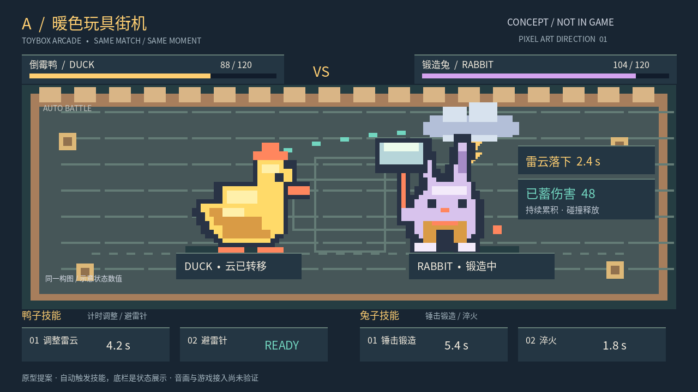

A / 暖色玩具街机
轮廓清楚、色彩亲和，适合作为角色体系的起点。厚重感可以在后续用动作节奏补足。
ROUND 01 · 像素方向探索
同一座竞技场，三种像素语言。看看角色、读读战况，再听一记雷击与重锤。
全部方案待选择方案 A / B / C · v1.0 网页交付 · v1.0
01 / 视觉方向
血量、技能和构图一致，方便比较。点开图片可放大查看细节。

轮廓清楚、色彩亲和，适合作为角色体系的起点。厚重感可以在后续用动作节奏补足。
负责人推荐 A。这是设计建议，不是用户已选定的方向；切换标签仅用于查看。
02 / 动态小样
8 秒带声音的概念片段。点击播放，手机可横屏或全屏观看。
01碰撞后，雷云转到新的持有者。
02倒计时结束，落雷与伤害反馈同时发生。
03兔子接触重击，释放积累的伤害。
视频为 A 方向的编排示意，非游戏录像。视频初始血量与静态图不同；省略了基础碰撞等机制。兔子蓄力没有固定上限，也不是蓄满后自动释放。
03 / 音效试听
本轮程序合成小样。声音由你点击后播放，同一时间只播放一段。
确认新的持有者
电击瞬态与短尾音
锻造期间的积累感
冲击与金属短尾
状态中的节奏点缀
进入强化状态的提示
04 / 这轮验证到哪里
当前动画包含重复的关键姿势，不是完整挥锤动作。手机窄屏下画面内部 HUD 较小，请放大或横屏查看。此网页的浏览器模拟检查不能替代真机验证。
05 / 下一轮，等你决定
补齐移动、受击、施法、重击与退场，统一锚点和帧序。
检查角色重叠、贴边、长数值和手机安全区。
细化落雷、吸收与重击，验证静音可读和低闪光版本。
可以在原对话告诉我你的偏好。网页不收集意见或自动提交选择；未经确认，不启动下一轮或交付游戏接入。